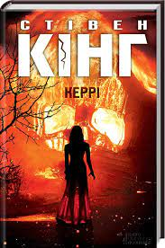
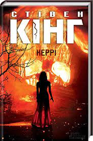
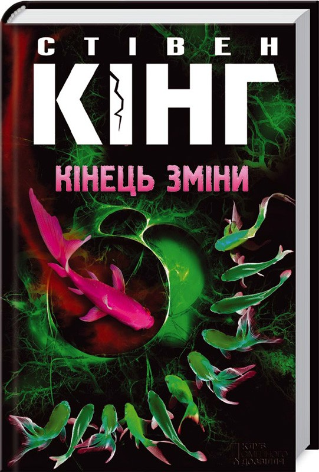
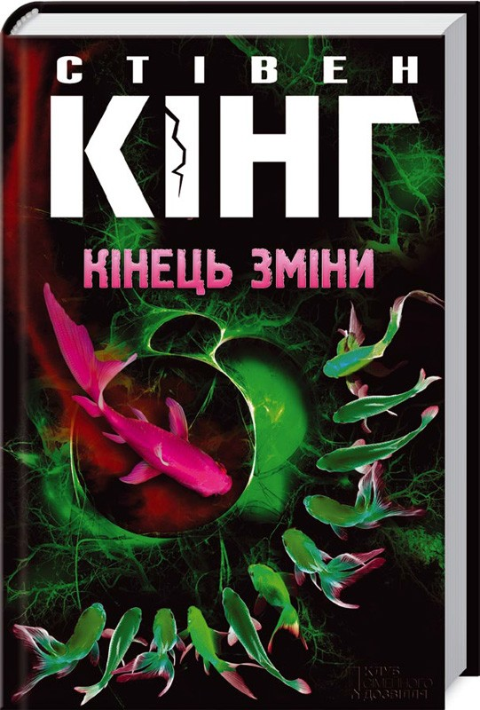

Книги Стівена Кінга
Ласкаво просимо на сайт
Стівен Едвін Кінг (англ. Stephen Edwin King; нар. 21 вересня 1947, Портленд, Мен, США) — американський письменник, автор більш ніж 200 творів, серед яких понад 50 бестселерів у стилях жахи (англ. horror), фентезі, трилер, містика. Також писав під псевдонімом Річард Бахман (англ. Richard Bachman). Було продано більш ніж 350 млн копій його романів та збірок оповідань. На основі його історій знято низку фільмів, а також намальовані комікси. Нагороджений медаллю «За особливий внесок в американську літературу». 2003 року Національний фонд книг нагородив його медаллю за видатний внесок в американську літературу. Також отримував нагороди за внесок у літературу протягом всієї кар'єри, такі як премії «За внесок у світове Фентезі» (2004), був нагороджений Канадською асоціацією книгарів (2007) і званням Гросмейстра від Американських письменників містиків (2007).
 

 

На данний момент доступні для прочитання:
- Стівен Кінг "Зелена миля"
- Стівен Кінг "Сяйво"
- Стівен Кінг "Керрі"
- Стівен Кінг "Аутсайдер"
- Стівен Кінг "Кінець зміни"
{kind=link}
{kind=link}
{kind=link}
{kind=link}
{kind=link}